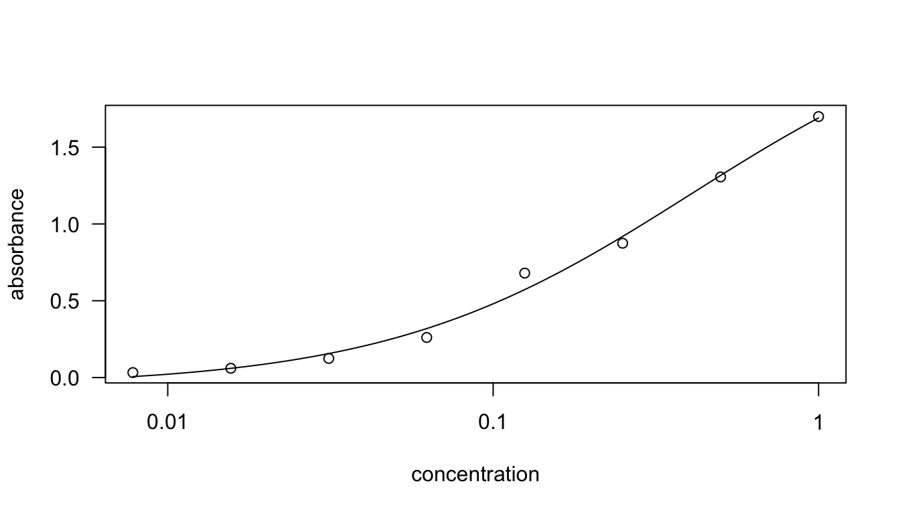

4 Estimate calibration curve
4.1 The four-parameter logistic curve
The relationship between concentration and absorbance can be described by the so called four-parameter logistic equation (4-PL). We will use the following equation:
\[A = f(c) = \mathrm{A_{min}} + \frac{\mathrm{A_{max}} - \mathrm{A_{min}}}{1+\exp(\mathrm{n} \cdot (\log_2(c)-\log_2(\mathrm{EC}_{50})))}\],
where \(\mathrm{A}\) stands for absorbance and \(c\) for concentration. The parameters that we are going to estimate are \(\mathrm{A_{max}}\), which is the maximal absorbance that can be obtained (for infinite concentration \(c \rightarrow \infty\)), \(\mathrm{A_{min}}\), which is the minimum absorbance that can be obtained (for \(c \rightarrow 0\)), and parameters \(\mathrm{EC}_{50}\) and \(n\). The value of \(\log_2 \mathrm{EC}_{50}\) is the inflection point of the curve. This means, \(\log_2 \mathrm{EC}_{50}\) is the concentration for which we obtain 50% of \(\mathrm{A_{max}}\). Parameter \(n\) is related to the steepness of the curve at the inflection point.
For convenience, we use \(\log_2\) in the equation (and not \(log_{10}\) as often used in literature), because then the estimated \(\log_2 EC_{50}\) is easier to interpret, since we performed a 1:2 dilution series to generate the concentrations of our standard. Note that \(\log_2(x) = \frac{log_{10}(x)}{log_2(10)} = 0.30103 \cdot \log_{10}(x)\). Changing the base simply scales all concentration by a constant value (linear transformation).
4.2 Regression of the standard
We fit the data obtained for the standard to the four-parameter logistic curve. This is a non-linear least squares problem and we use the Levenberg-Marquadt algorithm to solve it.
The Levenberg-Marquardt algorithm is more robust than the Gauss–Newton algorithm (used by default by the nls() function of the nls package), which means it converges to a minimum even if the initial starting values are far from the final minimum.
# Fit 4-parameter logistic dose-response curve
# Approach 1): Use nlsLM pacakge for Levenberg-Marquardt optimization
standard <- standard %>% dplyr::mutate(log2concentration = log2(concentration))
levm.fit <- nlsLM(
absorbance ~
Amin + ((Amax - Amin) / (1 + exp(n * (log2concentration - log2EC50)))),
data = standard,
start = list(Amin = 0, Amax = 2, log2EC50 = 0.5, n = -1)
)
# Show summary of the fit
summary(levm.fit)##
## Formula: absorbance ~ Amin + ((Amax - Amin)/(1 + exp(n * (log2concentration -
## log2EC50))))
##
## Parameters:
## Estimate Std. Error t value Pr(>|t|)
## Amin -0.05700 0.05978 -0.954 0.359117
## Amax 2.44950 0.39531 6.196 4.61e-05 ***
## log2EC50 -1.29803 0.49578 -2.618 0.022462 *
## n -0.64181 0.11414 -5.623 0.000112 ***
## ---
## Signif. codes: 0 '***' 0.001 '**' 0.01 '*' 0.05 '.' 0.1 ' ' 1
##
## Residual standard error: 0.05644 on 12 degrees of freedom
##
## Number of iterations to convergence: 10
## Achieved convergence tolerance: 1.49e-08# View(standard)Apparently, we can not estimate \(\mathrm{A_{min}}\) from the data. But we can fix it to a certain value: we know that \(\mathrm{A_{min}}\) can not be negative and we can use the values obtained from the blank wells as an estimate for \(\mathrm{A_{min}}\).
# Set Amin to blank values
Amin <- median(blanks$blank)
# Re-fit with only three free parameters
levm.fit <- nlsLM(
absorbance ~
Amin + ((Amax - Amin) / (1 + exp(n * (log2concentration - log2EC50)))),
data = standard,
start = list(Amax = 2, log2EC50 = 0.5, n = -1)
)
# Check new fit results
summary(levm.fit)##
## Formula: absorbance ~ Amin + ((Amax - Amin)/(1 + exp(n * (log2concentration -
## log2EC50))))
##
## Parameters:
## Estimate Std. Error t value Pr(>|t|)
## Amax 2.21560 0.20145 10.998 5.90e-08 ***
## log2EC50 -1.53719 0.29608 -5.192 0.000174 ***
## n -0.74553 0.06922 -10.771 7.55e-08 ***
## ---
## Signif. codes: 0 '***' 0.001 '**' 0.01 '*' 0.05 '.' 0.1 ' ' 1
##
## Residual standard error: 0.05767 on 13 degrees of freedom
##
## Number of iterations to convergence: 9
## Achieved convergence tolerance: 1.49e-08# Get 95% confidence interval
confint(levm.fit)## 2.5% 97.5%
## Amax 1.8848732 2.8761358
## log2EC50 -2.0560171 -0.6645695
## n -0.9010853 -0.6099279## Add calibration curve to plot
# Save estimated parameters
Amax.est <- coef(levm.fit)[[1]]
log2EC50.est <- coef(levm.fit)[[2]]
n.est <- coef(levm.fit)[[3]]
# Full range of considered concentrations
log2concentration.new <- log2(seq(0.008, 2, by = 0.001))
# Predict new absorbance values from calibration curve
calibration.curve <- tibble(
concentration.new = 2^log2concentration.new,
log2concentration.new = log2concentration.new,
absorbance.est = predict(levm.fit, tibble(log2concentration = log2concentration.new))
)
## Compute prediction and confidence intervals
# TODO: experimental -- ignore this part for now
fgh <- deriv(
absorbance ~
Amin + ((Amax - Amin) / (1 + exp(n * (log2concentration - log2EC50)))),
c("Amax", "log2EC50", "n"), function(Amax, log2EC50, n, log2concentration) {}
)
f.new <- fgh(Amax.est, log2EC50.est, n.est, log2concentration.new)
g.new <- attr(f.new, "gradient")
cov.fit <- vcov(levm.fit)
gs <- rowSums((g.new %*% cov.fit) * g.new)
alpha <- 0.05
delta.f <- sqrt(gs) * qt(1 - alpha/2, 15)
sigma.est <- summary(levm.fit)$sigma
delta.y <- sqrt(gs + sigma.est^2) * qt(1 - alpha / 2, 15)
calibration.curve <- calibration.curve %>%
dplyr::mutate(pred.lwr = absorbance.est - delta.y) %>%
dplyr::mutate(pred.upr = absorbance.est + delta.y) %>%
dplyr::mutate(conf.lwr = absorbance.est - delta.f) %>%
dplyr::mutate(conf.upr = absorbance.est + delta.f)
## Plot calibration curve
plot.ccurve <- plot.std(semilog = TRUE) +
geom_line(
data = calibration.curve,
aes(concentration.new, absorbance.est), alpha = 0.8
) +
geom_ribbon(
data = calibration.curve,
aes(x = concentration.new, ymin = pred.lwr, ymax = pred.upr),
alpha = 0.2, fill = "grey"
) +
geom_ribbon(
data = calibration.curve,
aes(x = concentration.new,
ymin = conf.lwr,
ymax = conf.upr),
alpha = 0.1, fill = NA, color = "grey70", lty = 3
) +
scale_y_continuous(limits = c(-0.3, 3), breaks = seq(-0.3, 3, 0.5))
plot.ccurve
The grey band shows the prediction interval and the dashed line the confidence interval (both for 95%).
Alternatively, one can use the drc package to fit a 4-PL curve using. However, the drm function performs a \(\ln\) transformation of the independent variable by itself. So in this case, the results are for \(\ln\)-transformed concentrations:
# Fit 4-parameter logistic dose-response curve
# Approach 2): Use drc package
# NOTE: the drm function performs a ln(x) transformation by itself.
# See also ?LL2.4 for more information
drc.fit <- drm(absorbance ~ concentration,
data = standard,
fct = LL2.4(names = c("n", "Amin", "Amax", "EC50"))
)
summary(drc.fit)##
## Model fitted: Log-logistic (log(ED50) as parameter) (4 parms)
##
## Parameter estimates:
##
## Estimate Std. Error t-value p-value
## n:(Intercept) -0.926589 0.154888 -5.9823 6.388e-05 ***
## Amin:(Intercept) -0.056483 0.055791 -1.0124 0.33132
## Amax:(Intercept) 2.449055 0.383663 6.3834 3.487e-05 ***
## EC50:(Intercept) -0.899679 0.337454 -2.6661 0.02056 *
## ---
## Signif. codes: 0 '***' 0.001 '**' 0.01 '*' 0.05 '.' 0.1 ' ' 1
##
## Residual standard error:
##
## 0.05644039 (12 degrees of freedom)plot(drc.fit)
ggplot(as.tibble(drc.fit$predres)) +
geom_point(aes(`Predicted values`, Residuals),
pch = 1, size = 3, color = "cornflowerblue") +
theme_plot() +
panel_border() +
geom_hline(yintercept = 0, lwd = 0.2)
Using the estimated parameters and the 4-PL equation, we can estimate unknown concentrations based on measured absorbance.